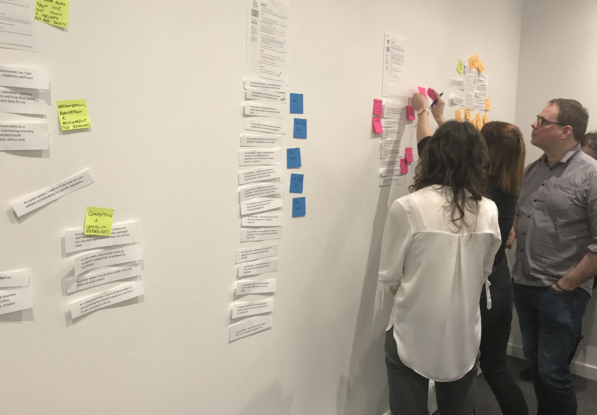
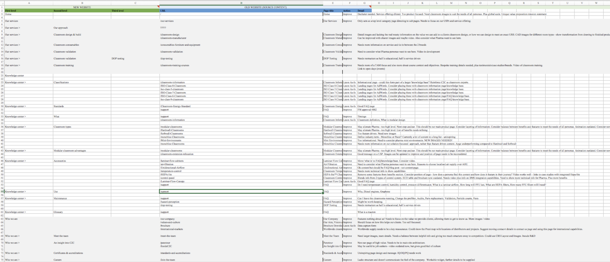
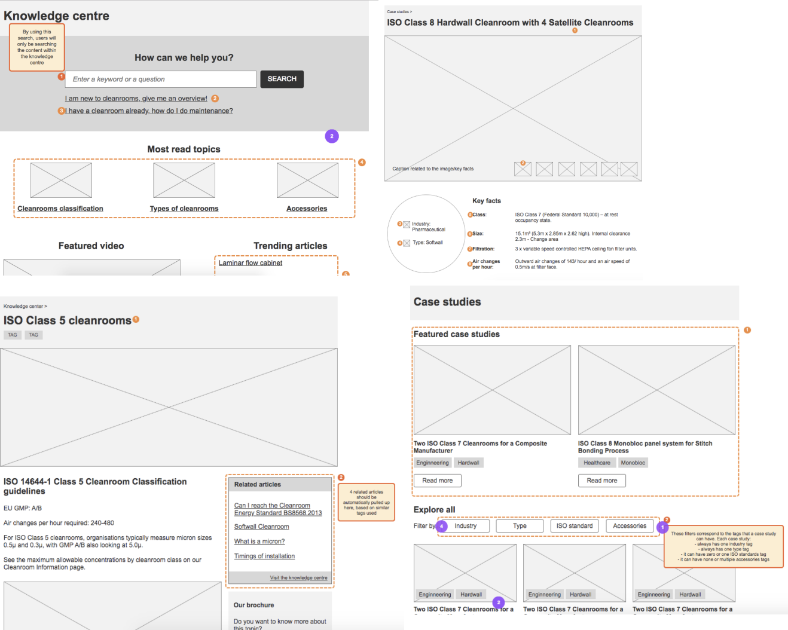
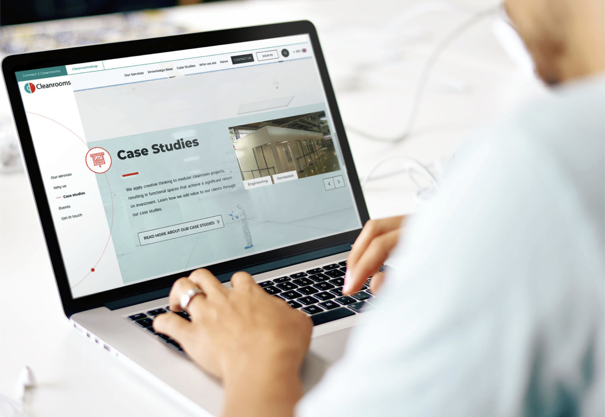
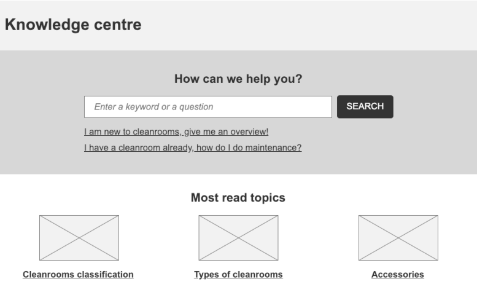

2017 · Connect 2 Cleanrooms
Connect 2 Cleanrooms
Redesigning the responsive website for a b2b company
About connect 2 cleanrooms
Connect 2 Cleanrooms is a B2B company that designs, manufactures and installs cleanroom environments for regulated industries.
The problem
When it came to digital presence, they had always been ahead of their competitors. To keep this marketing advantage, they wanted help with refreshing their website. They wanted:
- A new and fresher look and feel
- A more intuitive and accessible information architecture
- An online configurator which would have sped up the creation of quotes
In this project, I was responsible for the UX. The result was a very successful brand-new website, following usability best practices.
My role
Senior UX designer, working with another UX designer in the research phase and with a visual designer for the art direction.
Challenges
- Creating a very detailed development brief
- Content strategy
-
+20%
Increase in unique views
-
20 hours
saved on average each month by the sales team to create quotes
-
Building a UCD ground
Workshops, interviews, personas and design principles.
-
Organising the content
Content audit, strategy and information architecture.
-
Prototyping with devs
Designing hand in hand with front and back end.
-
The result
A UCD solution serving different user needs.
Building a UCD ground
The first thing to do was to understand the business and the users’ needs.
I gathered those by leading workshops with the client together with my team, as well as by running one-to-one interviews with typical personas.
The outcomes were collated into design principles, personas, KPIs, goals and user stories.

Organising the content
One of the main challenges was the content. The old website had a lot of wordy and outdated content.
I created a content audit template. Being such a technical topic, I tasked the experts (aka the client) with going through each page and auditing it. The audit included Google Analytics data, as well as more qualitative estimations such as which persona the content was for or whether it was outdated or not.
Based on this content audit and on the user stories from personas research I was able to create a content strategy and a new information architecture.

Prototyping with devs in mind
Next, there was the prototype to build.
On the client’s request, the website was going to be developed in Magento and this represented another challenge, as it required an ad-hoc use of Magento.
During the prototype phase, I worked closely with front end and back end developers, to validate what I was designing.
While building the prototypes in Axure I was also annotating the expected behaviour of the various widgets.

The result
Clean and fresh visual style
Future friendly and intuitive CMS

A UCD solution for different users
An example of how I addressed user needs in the prototypes comes from the knowledge centre. This was an important section of the website.
From research, it became clear that we were dealing with both experts in cleanrooms and people who were new to the topic.
In order to create an ideal user journey for both audiences, I designed the knowledge centre page as follows:
- at the top there was a search bar that allowed experts to jump straight into what they were specifically looking for
- below the search bar, a link was saying “I am new to cleanrooms, give me an overview”. This linked through to a page that gave inexperienced users an overview of what a cleanroom is in a jargon-free tone of voice. Further links were provided here too, in case users want to delve deeper.

Testimonials
Cristina has given me an excellent foundation in user experience and user interface design, her knowledge about the subject is infinite as she is constantly learning and pushing for better. Cristina has not only helped me to become a better designer but has also demonstrated to me how to be a professional working in the industry. Her calm but direct nature made learning easy and effortless, I am very proud to have had such an understanding and experienced designer to mentor me, who has now become a good friend. Siobhan Daley, Junior Designer at Cyber-Duck